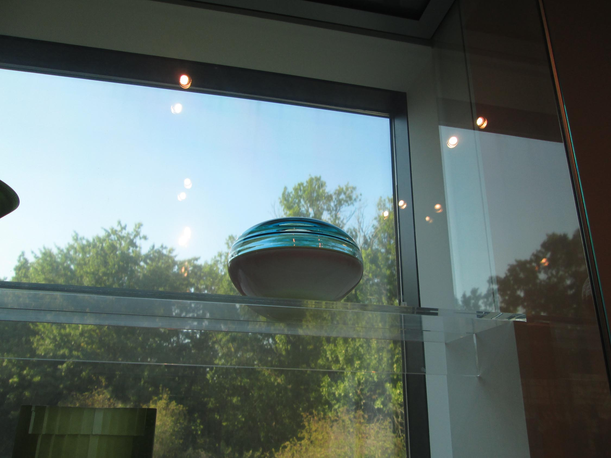
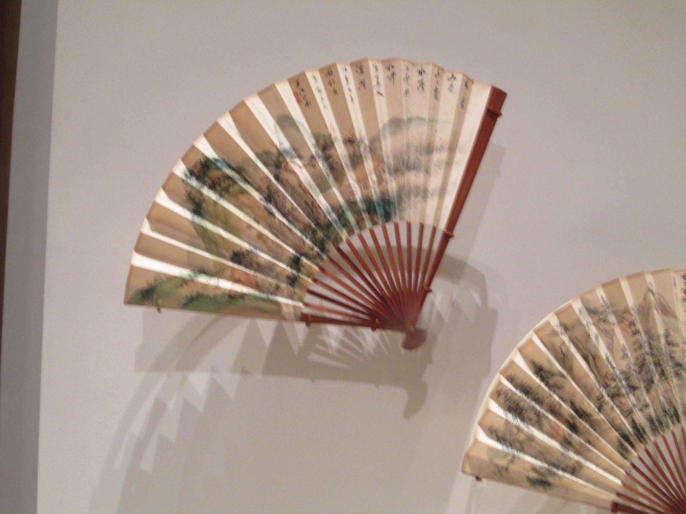
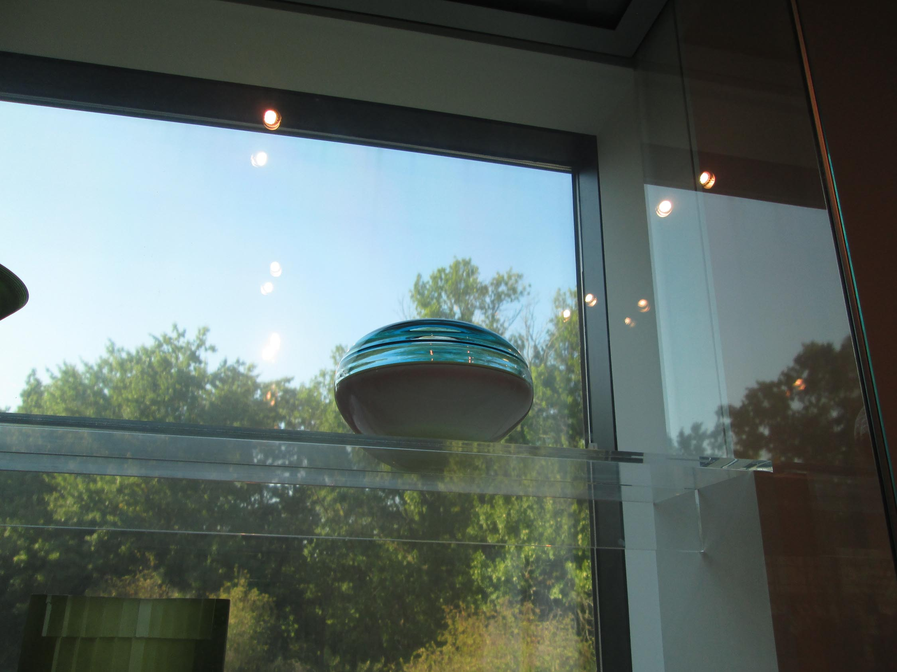
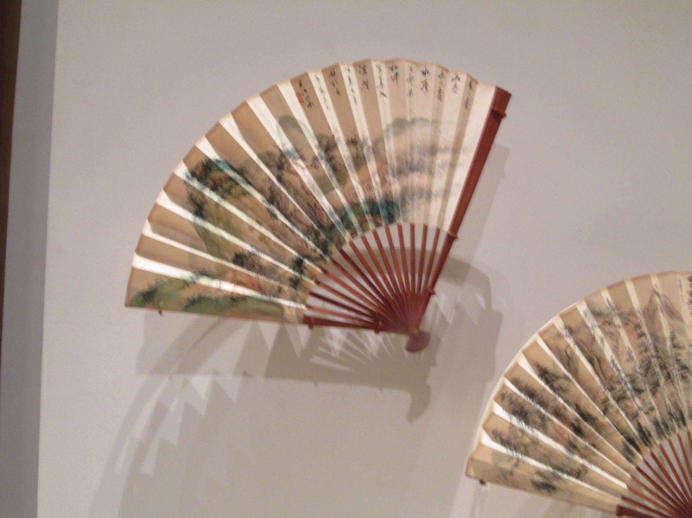
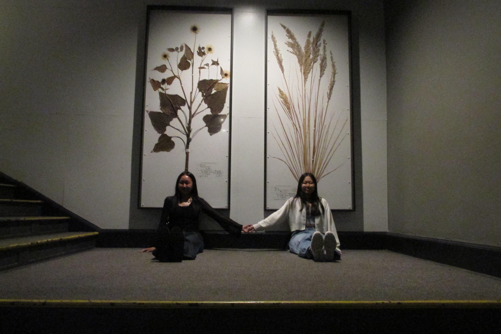
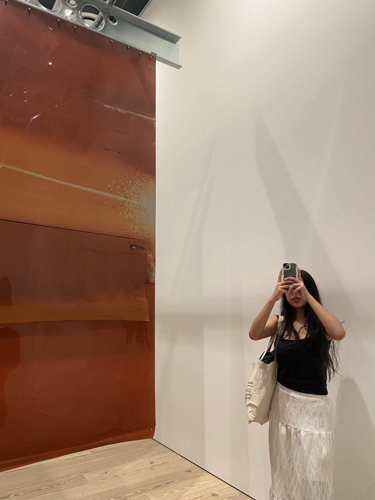
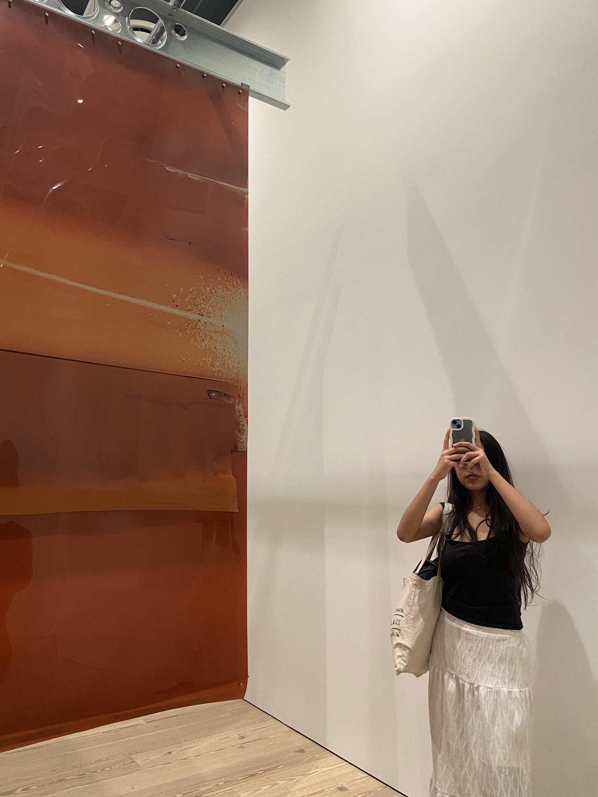
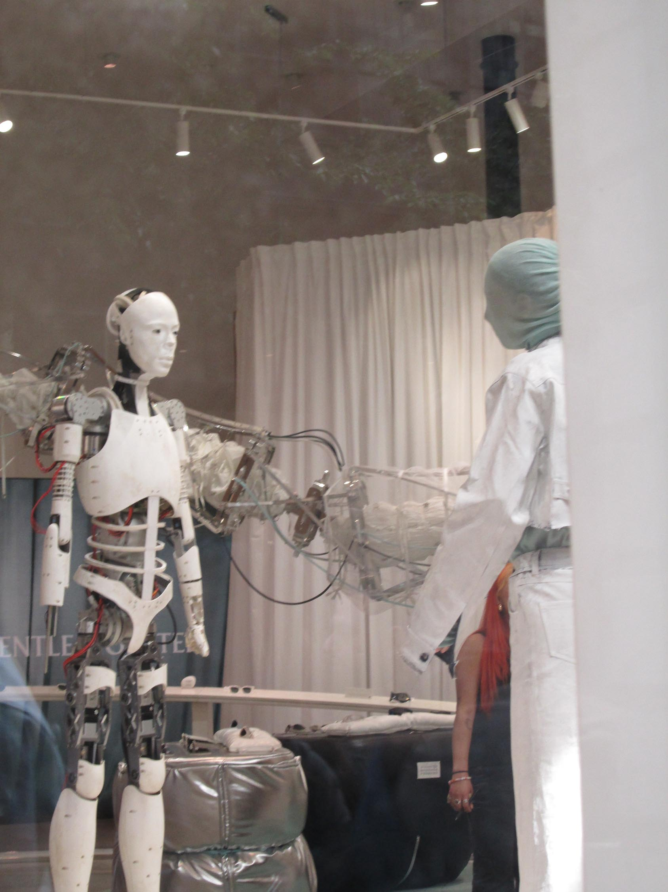

As my personal favorite medium to work with, I've realized since I started that it has helped me observe the world we live in more and taking in the natural forms of design that exist in the sturctures we're surrounded in

Black & White Study
What happens when color is fully stripped from an image?
In this collection, I chose to explore that very question by focusing on the raw essence of shape, form, and space. Without the distraction of color, the eye is drawn to the subtleties of light, shadow, and texture, allowing the composition to speak more powerfully.


Inspired by Japanese aesthetics, I reflected my selections based on the “Wabi-Sabi” concept which embraces finding beauty in things that are natural, understated, and unadorned.


Shot on a Canon EOS Rebel T5i DSLR

Humans and Nature
In this photography collection, I focused on exploring the contrast between human and nature, capturing the tension and harmony that coexist in their interaction.
 





Through my lens, I sought to highlight how human structures and interventions—buildings or machinery—stand in stark contrast to the organic forms and textures found in the natural world.

 



The rigid lines and geometries of man-made elements often juxtaposed with the fluid, unpredictable patterns of nature. Yet, in some frames, there's an undeniable connection.
Shot on Canon PowerShot A2300 HD